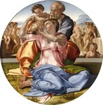
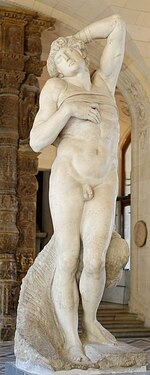
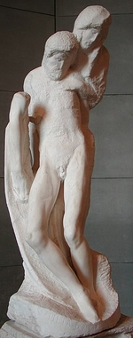

МИКЕЛАНДЖЕЛО
Щёлкните на изображение, чтобы его увеличить
1 
2 
3 
4 
5 
6 
7 
8 
9 
10 
11 
12 
13 
14 
15 
16 
17 
18 
19 
20 
21 
22 
23 
24 
25 
26 
Микеланджело Буонаротти, известный как Микеланджело
(1475, Капрезе – 1564, Рим)

Введение
Один
из величайших художественных гениев в истории человечества, в творчестве
которого нашли свое воплощение и завершение эстетические
искания эпохи Высокого Возрождения. Микеланджело
воспел абсолютную красоту, но не
безмятежную красоту Рафаэля, а красоту
в движении, красоту, исполненную чувством трагизма.
Микеланджело Буонарроти (Michelangelo
Buonarroti) родился в разорившейся семье,
утверждавшей, что они потомки славного рода, недавно переехавшие во
Флоренцию. Благодаря своим способностям, молодой человек попал в мастерскую Гирландайо (Ghirlandaio),
самого известного художника- монументалиста своей эпохи. Лоренцо Медичи,
Великолепный, заметил ученика и позволил ему посещать свои сады, Академию, что
давало ему доступ к коллекции древностей. В Академии Микеланджело встретился с рядом утончённых
интеллектуалов (Полициано (Poliziano),
Марсилио Фичино (Марсилио Фичино), Пико делла Мирандола (Pico della Mirandola)),
которые оказали глубокое влияние на его духовное развитие и рост запросов творчески мыслящего художника. Академией
заведовал скульптор Бертольдо ди
Джованни (Bertoldo di Giovanni) (1420–1491), специализировавшийся на бронзе.
Теперь Микеланджело стал скульптором по мрамору, и, по всей видимости,
изучение древностей оказало важнейшее влияние на его занятия. В то время дня
не проходило без того, чтобы кто-нибудь не извлёк из итальянской земли новую
находку: например, в начале XVI века была обнаружена известная скульптурная
композиция «Лаокоон». Из классической скульптуры Микеланджело
почерпнул знание композиции, группировки фигур, гармоничной красоты
человеческого тела, выразительной игры мускулатуры, но ко всему этому он
добавил поиски движения и морально-психологической глубины. Человеческое тело
стало языком, при помощи которого художник передавал эмоции и страсти, а
затем, на метафизическом уровне, выразил всю трагичность человеческой
судьбы перед лицом своего создателя.
Было много споров о неоплатонической трактовке и значении произведений
Микеланджело; иногда их мельчайшие детали рассматривали сквозь призму этой
философии, что, конечно, было уже излишним. Микеланджело всю свою жизнь
оставался человеком верующим, несмотря на то, что он, как и многие люди эпохи
Возрождения, был одержим синкретической мечтой. Он
жадно познавал Античность, впитывая дух обнаруженных работ, и он совершенно
не боялся привносить в христианский мир языческие элементы. Не стоит также
забывать, что он жил в довольно непростое время: этот флорентинец наблюдал,
как в его родном городе политические режимы сменяли друг друга с удивительной
скоростью; он видел, как Трон Святого Петра занимали скандальные (Александр
VI Борджиа (Alexander VI Borgia)), бесхребетные и жадные понтифики; стал
свидетелем того, как во многих людях поколебалась вера, и ортодоксальность
была отвергнута вместе с церковной властью. Подчас его обвиняли в том, что он
доходит до границ ереси, и у Микеланджело и вправду были довольно
сомнительные связи. Несмотря на конфликты, следы которых мы видим в его
работах, он не шёл на компромиссы. Нестабильность безусловно
мешала его проектам и его карьере; его непростой характер, легко уязвимая
гордость, частые перемены настроения от экзальтированного воодушевления к отчаянию и разочарованию повлияли на
исполнение его работ, многие из которых так и остались незавершёнными; это
было что-то вроде грандиозного провала, особенно в области скульптуры. Микеланджело
ощущал, что он прежде всего скульптор. Он считал,
что скульптура – самое благородное из всех искусств, частично из-за того, что
оно было самым сложным. Стоя перед глыбой мрамора, из которой он должен был
извлечь живое существо, он познал душераздирающие метания творца, который
никогда не будет удовлетворён. Из-за этого предчувствия неудачи, он часто не
доводил работу до конца, не полировал мрамор для придания ему блеска и
драгоценного вида, оставлял кое-где отметины от стамески и молотка, а иногда лишь начерно обозначал желаемые
формы. Эти non finito
часто наделяются неким романтическим ореолом, кажется, что они выражают самые
потаённые переживания мастера, вкладывавшего в них особое значение, но правда
была куда проще: от скуки или от ярости, охватывавшей его от осознания собственной
неспособности воплотить желаемое, Микеланджело просто отказывался продолжать.
К тем работам, которые он считал завершёнными, он всегда относился предельно внимательно.
Но эта brutezza в дальнейшем подействовала
на него разрушительно, и из-за нелюбви к доведению дел до конца, с возрастом
лишь усилившейся, Микеланджело стал символом непрестанной борьбы
человеческого гения со слепой неотвратимостью, кем-то вроде нового Сизифа.
РАННИЕ ГОДЫ И ПЕРВЫЕ ШЕДЕВРЫ
Именно
к началу его карьеры, когда он ещё числился в «Академии», стоит
отнести до сих пор не ясный барельеф «Битва лапифов
с кентаврами» (1) (Флоренция, Каза Буонаротти), и, в противоположность
язычество-христианство – исполненную безмятежности «Мадонну у лестницы»
(2) (Флоренция, Каза Буонаротти),
в которой скульптор отдавал дань технике своего предшественника Донателло.
Таким образом, с самого начала Микеланджело колебался между динамизмом,
драматизмом и их противоположностью, склоняясь при этом к мягкости и
какой-то гладкости, в которых можно найти некоторые отголоски
творчества Леонардо да Винчи. Была найдена и другая работа юного мастера –
деревянное распятие, заказанное настоятелем церкви Санто
Спирито (Santo Spirito) во Флоренции, хотя некоторые до сих пор оспаривают
его подлинность; это была единственная скульптура, которой автор решил
добавить цвет, чего больше он никогда не делал, предпочитая блестящую или
матовую простоту мрамора. После смерти Лоренцо Великолепного в 1492 году,
Микеланджело покидает дворец Медичи, и в 1494 посещает Венецию и Болонью, где
изучает анатомию человеческого тела. В 1495 году по возвращении во Флоренцию,
он высекает для кардинала «Спящего купидона», на данный момент утерянного;
тогда он казался настолько совершенным, что его приняли за древнее
произведение. Кардинал уговорил молодого скульптора отправиться в Рим, и
враждебная обстановка Флоренции лишь ускорила его отъезд. Скорее всего, в тот
момент Микеланджело решил избрать более удобную стезю скульптора; здесь было
широкое поле для деятельности, а персонажей диктовала мифология, пребывавшая
на гребне популярности. Однако в Болонье его подрядили закончить работы над дарохранительницей
собора Сан-Доменико; маленькие фигурки коленопреклонённного ангела, святого Петрония (St Petronius) и святого Прокла (St Procul)
отражают влияние мастера начала кватроченто, Якопо делла Кверча (Iacopo della Quercia), от которого Микеланджело перенял пышные складки
одежды и сдержанную страсть. По заказу французского кардинала Микеланджело
выполнил свой первый великий шедевр в Риме; это была одна из самых известных
его работ, «Пьета» («Оплакивание»)
(Pieta) в соборе святого Петра (3), искалеченная
при нападении 1972 года. Её сюжет и композиция весьма необычны, они ближе Северной традиции, чем итальянской;
тем не менее, художнику удалось извлечь из мрамора утончённую и трогательную поэму. Целомудренное лицо Девы Марии (изображенной, что любопытно,
весьма молодой – ровесницей казнённого Христа) грациозно склоняется над
покинутым, но не носящим следов пыток телом Христа, прекрасным в смерти,
словно Адонис; это тело демонстрирует гармоничную анатомию на фоне замечательных
складок прекрасного плаща, который сняла с себя страдающая мать, чтобы
сделать из него саван. Этот ранний шедевр, поражающий виртуозностью и
волнующей чувственностью скульптора, остаётся единственным произведением, на
котором автор вдоль пояса, стягивающего грудь Девы Марии, написал своё
имя. Параллельно с созданием этой праведной статуи, Микеланджело работал над
самой языческим своим произведением, удивительным «Пьяным Вакхом» (Drunken Bacchus) (4)
(Флоренция, Музей Барджелло), пошатывающимся
юношей, за спиной которого смеётся ироничный сатир. В
этой скульптуре Микеланджело превзошел античные образцы
по части изображения чувств и жизненной силы.
И хотя статуи для алтаря Пиколомини (Picolomini) в Сиеннском соборе
были довольно противоречивыми, появилась теория, согласно которой «Мадонна»
из церкви Нотр Дам в
Брюгге (5) изначально могла предназначаться именно для этой группы,
выполненной примерно в 1500 году. Здесь овал её прекрасного лица приобретает
довольно угрюмое выражение. Сюжет «Мадонны с ребёнком»
вдохновил скульптора на создание двух очаровательных тондо
(округлых композиций, до сих пор любимых в Италии), в которых он исследует
(едва ли он когда-либо позже возвращался к этой технике) возможности
барельефа – тондо Питти
(Pitti) (6) (Барджелло (Bargello)) и тондо
Таддеи (Taddei) (7)
(Лондон, Королевская Академия), названные так в честь семей, для которых они
предназначались. В то же время, Микеланджело вспоминает о своём образовании
художника, и в том же ключе делает тондо
Дони (Флоренция, Уфицци),
изображающую Святое Семейство в довольно необычном
ракурсе: Мадонна припала к земле, а на заднем плане изображены обнажённые
фавны, чьё присутствие в этом религиозном сюжете может быть объяснено модой
на аллегории (язычество отступает перед Христианством?). В этом самом раннем
своём живописном произведении Микеланджело демонстрирует удивительную способность
к моделированию пространства и оригинальный подход к выбору тональностей. Тем
не менее, следующим его шедевром стала скульптура. По
возвращении во Флоренцию, куда его неизменно тянула тайная ностальгия,
Микеланджело изготавливает из глыбы мрамора, изначально предназначенной для
статуи собора, но забракованной из-за недостаточной ширины, гигантскую
статую героически обнажённого Давида (9) (1501–1504; статуя больше 4 метров
[13'] в высоту), небрежно закинувшего на плечо пращу – картина, пышущая
победоносной юностью, в которой художнику чудесным образом удалось
скрыть недостаточную толщину мрамора. «Давид»
удостоился чести быть выставленным перед «Палаццо Веккьо»
(в настоящий момент он находится в «Академии»). После этого слава Буонаротти сделала его самым выдающимся художником во
Флоренции. В 1503 году Синьория поручила ему выполнить огромную фреску для
Большого зала Совета; Микеланджело написал «Битву при Кашине» (Battle of Cascina),
ныне потерянную, изобразив на ней взбудораженные людские массы. В то же время
ему была поручена почётная миссия высечь для собора
двенадцать статуй апостолов выше человеческого роста. От этого великого
проекта осталась лишь статуя святого Матфея (Академия, Флоренция)(10), не до
конца очищенная от породных примесей.
В 1505 году фееричный Папа Юлий II (Julius
II) (Джулиано Дела Ровере
(Giuliano Della Rovere)) пригласил Микеланджело в Рим для работы
над его гробницей. Это было начало долгого и болезненного проекта, который,
как и капелла Медичи во Флоренции, будет бесконечно преследовать художника на
протяжении всей его жизни, и для которого он так и не сможет найти достойного
варианта исполнения первоначального замысла. По первоначальному плану
усыпальница понтифика должна выла находиться в соборе Святого Петра, на тот
момент строящемся, а точнее – на почётном месте под куполом. Это навлёкло на
себя упрямый гнев великого архитектора Браманте (Bramante). Вражда преследовала Микеланджело долгое время,
что не способствовало выполнению проектов. Юлий II изменил своё мнение и
поручил вместо этого непокорному Буонаротти изготовление
гигантской бронзовой статуи, изображающей лично Юлия и предназначенной для
украшения фасада церкви Святого Петрония в
Болонье; она должна была символизировать подчинение города Папе. Выполненное
из бронзы, что было весьма несвойственно художнику, это произведение разделило
обычную судьбу политических манифестов: как только в город пришли мятежники,
они повалили его и впоследствии переплавили.
Потолок Сикстинской Капеллы
В 1508 году у Юлия II родилась новая идея. Он поручил художнику, в чьём гении он не сомневался, украсить потолок Сикстинской Капеллы. Микеланджело также должен был завершить этот проект фресками на люнетах и в пазухах свода. На стенах к тому моменту уже красовались ранее выполненные фрески, изображавшие сцены из Евангелия и жития Моисея. Проект Буонаротти включал в себя сцены из истории человечества, от сотворения мира до Моисея, то есть фактически до всемирного потопа и дальнейшего ожидания рождества Христова. Непосредственно на потолке расположилось девять прямоугольных фресок, изображавших сотворение мира, первородный грех и историю Ноя (11). Сцены сотворения мира считаются наиболее известными, особенно сцена отворения мужчины и женщины, в которой художник использовал ограниченное количество персонажей для придания картине не только драматической напряжённости и эпического величия, но и несравненной эмоциональной глубины. Невозможно забыть взгляд первого человека, ослеплённого блеском и в то же время колеблющегося; как невозможно забыть и жеста его Создателя, такого величественного и нежного, едва касающегося своим перстом Адама, дабы вдохнуть в него жизнь. (12) Совершенно очевидно, что Микеланджело решил порвать с традиционными образами, чтобы создать собственную космогонию, которой он выражает всю силу своей веры и всю страсть своей души; также он создаёт свой собственный, совершенно новый канон. Тела с чрезмерно развитой нечеловеческой, подчас совершенно чудовищной мускулатурой – все эти режущие глаз непропорциональные формы в конечном счёте рассказывали историю, находящуюся за пределами обычного человеческого опыта. Вдоль свеса с библейскими сценами в различных позах сидели обнажённые юноши с пристальным взглядом. Это были ignudi, оригинальные создания автора, в которые он вложил все результаты своего тщательного изучения красоты человеческого тела; они были промежуточным звеном между Раем и Адом, не упоминавшемся в священном писании, образцом наших страстей и способностей. Эти загадочные совершенные существа, стремящиеся к отождествлению с божественной сутью, без сомнения, имеют отношение к Неоплатоническим теориям, в которые с головой ушёл Микеланджело. Чуть ниже, между люнетами, в обрамлении ложных пилястров, которые поддерживали херувимы, исполнявшие роль Атлантов, располагались двенадцать сидящих фигур, изображавших поочерёдно пророков и сивилл. Здесь проклятие рода человеческого смягчается сообщением об искуплении, однако серьёзность и суровость этих фигур едва ли позволит лучу надежды пробиться сквозь плотную стену боли и страданий. Даже в женских фигурах едва ли можно отыскать хоть намёк на изящество. Например, огромная сивилла Кумская (Cumae) (14); её узловатые руки, словно принадлежащие борцу с ярмарки, производили весьма отталкивающее впечатление. На парусе свода в четырёх углах располагались эпизоды из Ветхого Завета (Давид (David) и Голиаф (Goliath), Юдифь (Judith) и Олоферн (Holofernes), и т.д.), связанные с чудесным спасением народа Израилева – избранных людей. В сферических треугольниках над окнами были изображены скрученные фигуры, предположительно принадлежащие к языческим семьям; и, наконец, в люнеттх, расположенных по бокам окна, художник нарисовал Праотцев Христа (15) - ещё один шаг к искуплению.
От гробницы Юлия ii к капелле Медичи
Титанический
труд над потолком Сикстинской капеллы отнимал у Микеланджело время и силы
вплоть до 1512. На следующий год Юлий II умер, и его сменил Лев X, который не
жаловал Микеланджело, подозревая его в республиканизме. Художник вернулся к
работе над гробницей покойного понтифика. Изначально предполагалось, что это
будет обособленное строение пирамидальной формы, у подножия которого будут
располагаться статуи рабов и победителей, символизирующих жизненную борьбу, а
также свободные искусства. В середине величественно восседали бы Моисей и
Святой Пётр, представляющие ветхий и новый завет, а над всеми ними возлежал бы
Папа, поддерживаемый ангелами, которые несли его к вечной славе. Новый
контракт, заключённый с преемником Юлия II в 1513 году, слегка упростил
планировку, уменьшив число статуй и прислонив монумент к стене. Именно для
второго варианта были изготовлены две скульптуры рабов (16 музей
Лувра), пытающихся разорвать свои путы, обе эти скульптуры на редкость
эмоциональны. Также художник начал работать над статуей внушающего ужас
Моисея, с потрясающе развитой мускулатурой и яростным взглядом, пропитанной
нечеловеческой, царской силой. Новые изменения 1516 года привели уменьшению
размера рабов: это были лишь грубые наброски статуй, но они уже очаровывали
взгляд.
Проект гробницы Юлия II был на грани краха. Однако в 1517 году, Микеланджело
с энтузиазмом переключается на другое задание – Фасад Церкви Медичи Сан
Лоренцо (San Lorenzo) во
Флоренции (17). Это был грандиозный проект как в
области архитектуры, так и в области скульптуры; однако и он потерпел неудачу.
Примерно в 1520 году Лев X поручил Микеланджело возведение и украшение
погребальной капеллы при той же церкви, чтобы в ней можно было установить два
монумента в честь Джулиано ди
Медичи (18), герцога Немурского, и Лоренцо, герцога
Урбинского, великих защитников трона понтифика. Но
художник пошёл дальше и не остановился лишь на прославлении Медичи; он придал
этому монументу гораздо более грандиозное и широкое значение, в котором вновь
без труда узнаются неоплатонические идеи, впитанные им в юности, а так же его
склонность к постоянному обдумыванию глобальных проблем человечества. По
своей структуре архитектура капеллы напоминает ризницы кватроченто. В
частности, это видно в подчёркивании с использованием более тёмного камня, пьетра серена, архитектурных линий; однако здесь также
чувствуется новая мощь и динамизм. Погребальные монументы занимают две
стороны прямоугольника и подчиняются всё той же пирамидальной схеме: в двух
прямоугольных нишах установлены статуи почитаемых правителей,изображённых идеализированными героями в доспехах
римских капитанов. Джулиано, юный, энергичный,
олицетворяет действие; лицо его ярко освещено дневным светом. Пристальный
взгляд Лоренцо, напротив, скрыт в тени, отбрасываемой забралом шлема; он
погружён в размышления, держа руки на нижней части туловища; он обеспокоен,
загадочен, он символизирует мысль, которая направляет человека внутрь себя
самого. У их ног лежат саркофаги, крышки которых состоят из двух завитков, и
на их скошенных верхушках лежат четыре обнажённые фигуры в самых неудобных
позах; их конечности нелепо перекрещены, как будто они переломаны, а лица
искажены гримасой печали и страданий, что символизирует муки человеческой
души на протяжении жизни. Эти фигуры – аллегории времени суток, или, если
угодно, жизненных циклов: День, Ночь, Рассвет и Сумерки, соответствующие
мужчинам и женщинам; на некоторых из них остались незавершенные места. На
самом деле, устанавливал монументы не Микеланджело; этот амбициозный
проект вновь прошёл сквозь череду изменений. В частности, Микеланджело
рассчитывал установить на нижнем уровне фигуры речных богов, лежащих на
античный манер, однако даже не сделал их грубых набросков (одна глиняная
модель хранится во флорентийской «Академии»); также художник планировал разместить фрески в верхних люнетах. С третьей стороны
капеллы была установлена «Мадонна Медичи», пытающаяся удержать беспокойного
младенца Иисуса, который сидит на её коленях. В ней уже нет учтивости «Мадонн»
из Ватикана и Брюгге, в её печали появилась какая-то страстность, выраженная
в её более угловатом телосложении, грубых одеждах и некоторой свирепости в её
внешности.
А затем наступили нелёгкие, суровые времена. Во Флоренции была установлена народная
власть; в 1527 началось разорение Рима, и культура гуманистов эпохи
Возрождения стала рассыпаться под ударами новых варваров. Художник тяжело
переносил эти события; к этому добавились внутренние переживания и различные
препятствия, мешающие его работе. В 1530 году Флоренция отступила перед Папой
Климентом VII. Вскоре она перестала быть домом для
Микеланджело, и в 1534 году он практически навсегда покидает этот город (едва
успев завершить работу над гробницей Медичи) и перебирается в Рим. Там монумент
Юлия II (20) становиться для него настоящим кошмаром, и в 1532 году, устав от
борьбы, он снимает с себя обязанности по выполнению работ; вместо него
монумент закончили весьма посредственные ученики.
Впоследствии они установили его в маленькой церкви Сан Пьетро
ин Винколи (San Pietro in Vincoli),
которая не вполне подходила для этого по размеру. Микеланджело принял участие
в работе лишь над двумя новыми статуями для завершения монумента: Рахиль,
олицетворяющая созерцательную жизнь, и Лия, олицетворяющая жизнь
деятельную; в обеих чувствовались тенденции классицизма, к которому
склонялись все стареющие художники. «Рабы» и композиция «Победители»,
изначально предназначавшиеся для этого великолепного ансамбля, остались в мастерской
(ныне они находятся в Палаццо Веккьо, Флоренция);
их академичная конструкция «en flamme»
явилась вдохновением практически для всех скульптур маньеристов. Наконец,
пропорции Моисея безнадёжно нарушены из-за его местоположения на
нижнем уровне, которое ему совершенно не подходит.
«Страшный суд»; архитектурные работы
Печальное
настроение художника и его нарастающий пессимизм передались великой фреске «Страшный
суд», выполненной в период с 1563 по 1541 годы по заказу Павла Фарнези III, пожелавшего расписать дальнюю стену Сикстинской
Капеллы. Она выдержана в гораздо более мрачных тонах, нежели фрески на
потолке; Христос-судья, предстающий в образе располневшего
Апполона, может внушать что угодно, только не
умиротворение, а большая часть изображенных кажется, обречена на проклятую
жизнь. В завершении разбора отметим, что композиция, весьма беспорядочная,
страдает от соседства с более ранними шедеврами. Как и в своей «Пьете»,
Микеланджело вновь прибегает к средневековой тематике, немного дополняя её
реверансами в сторону Данте и античности (паромщик Харон (Charon)).
Души, мучающиеся в аду, изображены с таким изобретательным разнообразием, что
выглядят такими же отвратительными, как романские тимпаны XII века. Избранным
нужна помощь ангелов и святых, чтобы через боль вознестись в рай. Этот
великий ансамбль сделал гораздо больше, чем все остальные, для того, чтобы
укрепить репутацию Микеланджело в отношении «terribilita»
(«устрашающей силы»). С другой стороны, нам известно, что в следующем веке
наготу героев возрождения сочли шокирующей и решили во имя благопристойности
прикрывать её брюками!
Однако нельзя сказать, что его долгая старость была совсем беспросветной;
Микеланджело до самой смерти продолжал писать и принимал активное участие в
творческой жизни своего времени, давая различные советы и рекомендации своим
ученикам; почитаемый патриарх создал легенду, которая пережила его самого. Он
нашёл друзей в Римском кружке, собравшемся вокруг поэтессы Виттории Колонна (Vittoria Colonna) (1492-1547), частично воссоздававшем ту
атмосферу великих дискуссий, которая была присуща минувшим дням в садах
Академии. Долгое время он сам писал стихотворения, которые, как и его
переписка, могут многое нам рассказать о его мыслях, в частности, касающихся неоплатонических
концепций. Бюст Брута (Brutus) (21)
(Флоренция, Барджелло), безупречный портрет убийцы
тирана, высеченный им в этот период, несёт на себе отпечаток той римской
дружбы. Микеланджело выполнил ещё две великолепные фрески для капеллы Паулина (Pauline Chapel) (Ватикан): «Обращение Святого Павла»
(22), сброшенного с лошади, и «Распятие Святого Петра» (23), однако
вновь большая часть работы сделана руками его учеников.
Хлопотные архитектурные проекты отнимали у него всё
больше времени. На этом поприще двумя его величайшими достижениями были
вестибюль и лестница библиотеки Лауренцианы (Laurentian) во Флоренции, начатые в 1523 году, но
завершённые лишь после 1560 Барталомео Амманатти (Bartolomeo Ammannati) (1511–1592) по его планам. В
Риме также руководствовались его разработками при переделке терм Диоклетиана
(Diocletian’s Baths) в
церковь (Санта Мария дельи Ангели,
1561–1566)) (Santa Maria degli Angeli, 1561–1566) и при
установке роскошного карниза на верхнем ярусе дворца Фарнези.
С 1538 года под его руководством была перестроена Капитолийская площадь; на
нее выходят три дворца, украшенные массивными пилястрами, придававшими
фасадам эффект ритма и движения при помощи глубоких теней. Эта динамичная
структура отсылает нас к архитектуре к барокко. В
центре площади, на коне восседает Марк Аврелий (Marcus Aurelius), а перед
входом были установлены Диоскури (Dioscuri), выполненные согласно классическим канонам
скульптуры. Наконец, немалым вкладом в его славу стала разработка
Микеланджело дизайна знаменитого купола собора Святого Петра. Будучи
официальным архитектором базилики в 1546 году, ему,
однако, не удалось увидеть её завершённой; этому помешали махинации некоторых
друзей его предшественника, Антонио де Сангалло
младшего (Antonio da Sangallo the Younger). Впоследствии, внешний каркас был
перестроен. Тем не менее, верно то, что огромный крест собора Святого Петра
до сих пор несёт на себе печать гения Микеланджело. Бернини, ещё одному
гению, каким-то образом удалось найти совершенную гармонию с великим
предшественником, перед которым он преклонялся.
Послание скульптора
Микеланджело
никогда не забывал о страсти всей своей жизни, своём призвании – скульптуре.
До самой смерти он продолжал эпическую битву с мрамором. Его преследовала мысль
о смерти, и эти раздумья, так соответствующие его христианской вере,
усиленные старостью, вновь вернули его к образу Пьеты;
если быть точным, это «Снятие с креста» (24), которое он начал
примерно в 1550 году, изначально предназначая его для своей могилы
(Флоренция, Дуомо). И вновь формы чрезвычайно
оригинальны: тело Христа, искривлённое, с многочисленными вывихами, которое
едва удаётся удержать двум женщинам по бокам, так
как оно всё время норовит упасть; призрачная фигура (в которой можно увидеть
автопортрет художника) Никодима (Nicodemu) или, согласно некоторым толкователям, Иосифа Ариматейского (Joseph of Arimathea), стоящего позади,
как бог отец в некоторых Германских святых троицах, не имеющего отношения ни
к одной итальянской системе того времени. Казалось, ему вновь пришлось обратиться
к Северному миру, чтобы найти там понимание этого навязчивого
экспрессионистского мистицизма. Последняя попытка – и вновь человек,
перекошенный от боли, стоит перед Мадонной «Пьеты
Ронданини» (Pieta Rondanini) (25) (Милан, Кастелло
Сфорцеско (Castello Sforzesco)), несчастен и очень подвижен. Художник,
который в ярости уже обрушил молот на Пьету Дуомо, убирает ногу
Христа и разбивает его руки, отчаявшись получить желаемый результат,
превращая тем самым результат своей работы в подобие призрака преследующей его
по пятам неудачи и пустоты. На наш взгляд, не это последнее изображение
беспомощности – столь любимое нашими современниками –нужно
вспоминать, а шедевры юности и зрелости, которые потрясли и перевернули
искусство того времени своим напряжением, пылом, своей неукротимой энергией.
Из этого мучительного искусства потрясающе изобретательных форм, должно быть,
вышло движение маньеристов, родившееся во Флоренции под началом самого мастера,
и вскоре распространившееся по Европе. Именно Микеланджело изобрёл «inea serpentina», одно из
ключевых направлений маньеризма. Некоторые его работы могут быть названы маньеристскими, такие как «Победа», «Пейзаж с Геркулесом
и Какусом» (Флоренция, Каза
Буонаротти) и статуя Христа для церкви Санта
Мария сопра Минерва (Christ
de Santa Maria sopra Minerva)
(26) в Риме. Наконец, из патетики Микеланджело также чуть позже родилось
барокко, мастера которого признают Буонаротти одним
из своих духовных наставников.
Микеланджело умер в Риме, практически достигнув девяностолетнего порога,
овеянный славой и уже ставший легендой. Тем не менее, его похоронили на его настоящей
родине, во Флоренции, где он покоится и по сей день.

© 2006 Umanista.Net